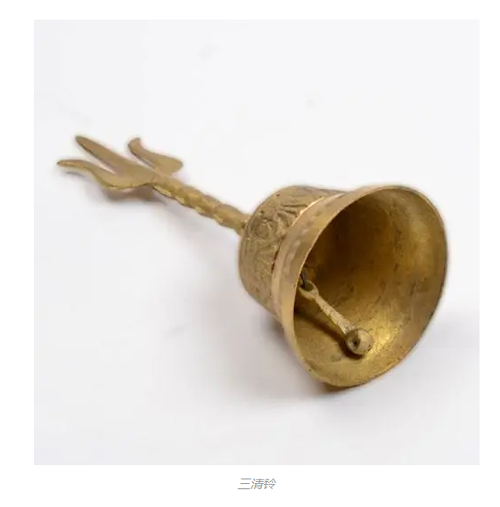

——くるくるくるくるり 回る世界に酔う 以及 miku生日快乐啊。
这个miku好棒
下午在一个技术群里边稍微指点了一下萌新，然后被叫大佬了。
嘿。
看了个UP做果酱，很棒。我种的柠檬树丰收啦！结了50斤我一个都没浪费~！
打歌曲糊得一比！菜！
我倒是不介意分数啥的，但是，但是好多爱爱得歌曲只有那个难度才有。o(￣┰￣*)ゞ
尴尬乐事：
我今天遇到Bug，向官方提交，并且询问解决在很宽松的日期内能否解决
官方：做不到啊无雨君~
刚看到关于《听琴图》的视频，里边提及了宋徽宗最爱的道家香品：“宣和内府降真香”，然后“传说这香烟直上，能引得天上仙鹤降落人间”
俺寻思，这怕不是什么迷烟，就像蚊香差不多，直接让仙鹤飞不动，掉下来。
然后就可以焚琴煮鹤饱餐一顿啦！！！
太棒了。
哦，旁边得香炉十分奇异，原型来自道教法器“三清铃”，棒，这下酒杯和叉子都有了~
夜深EMO时间！
看了一些unity的技术分享视频，只能说浩如烟海
想起一段歌词
“渺渺前路
荆棘密布
杳杳征途
道跻且阻
孤影伴烛
彷徨踌躇”
然后你猜怎么着？嘿，我看了个水母的视频，视频中提及一些水母比同类多了几像素的眼睛，多了一点点点肌肉，就超越了一大批了。
这不，我瞬间觉得我又行了。
各种蛋疼哟朋友们，开发遇到几个适配的问题，现在发不了包，正在惆怅中。要不直接摆烂写简历算了。